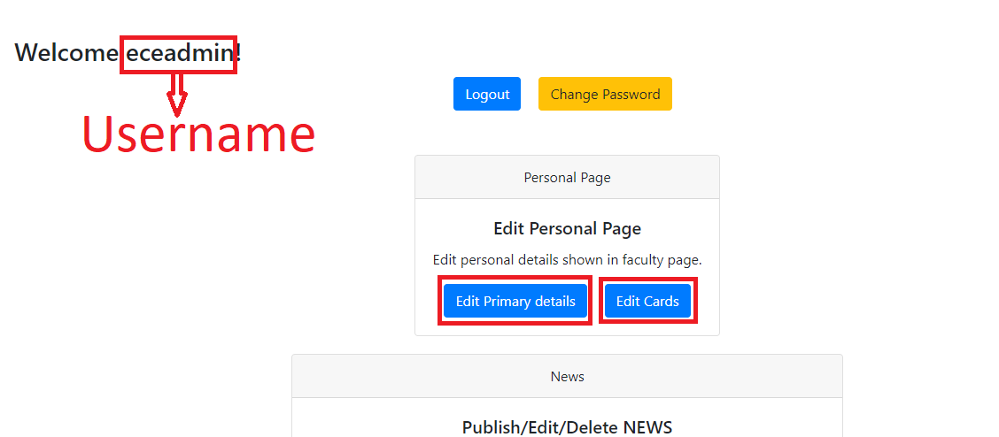
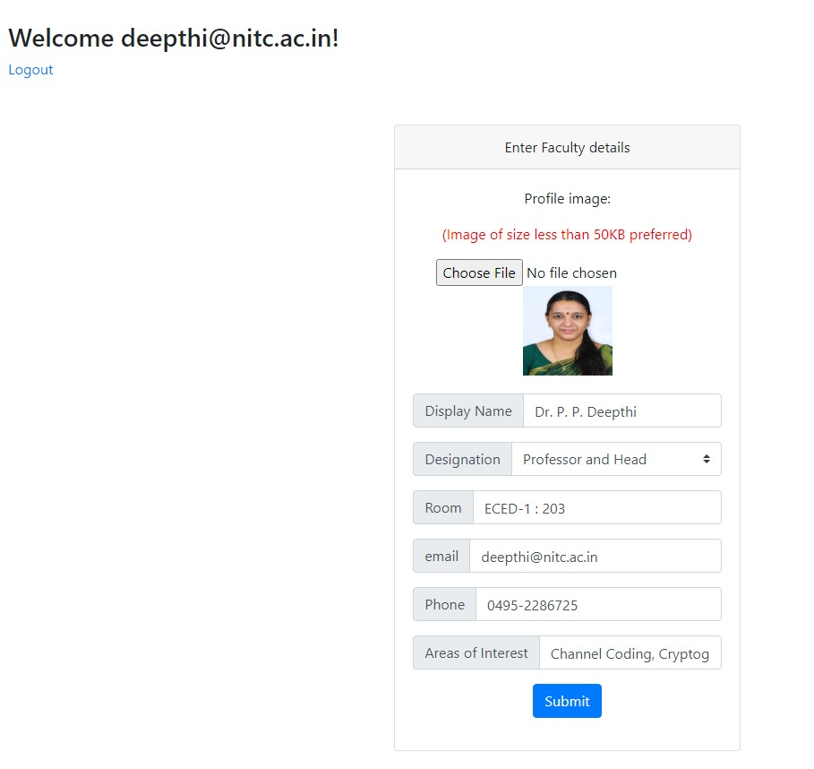
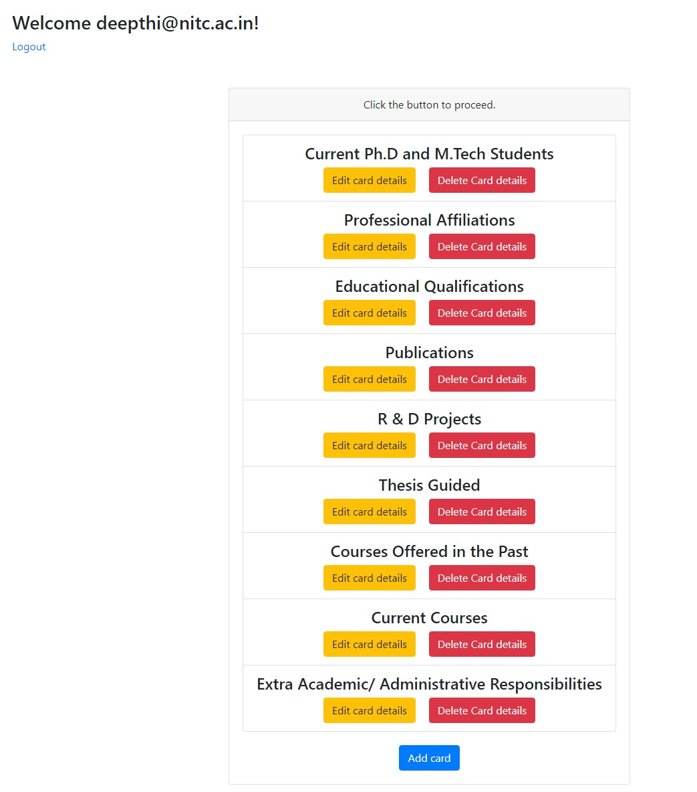
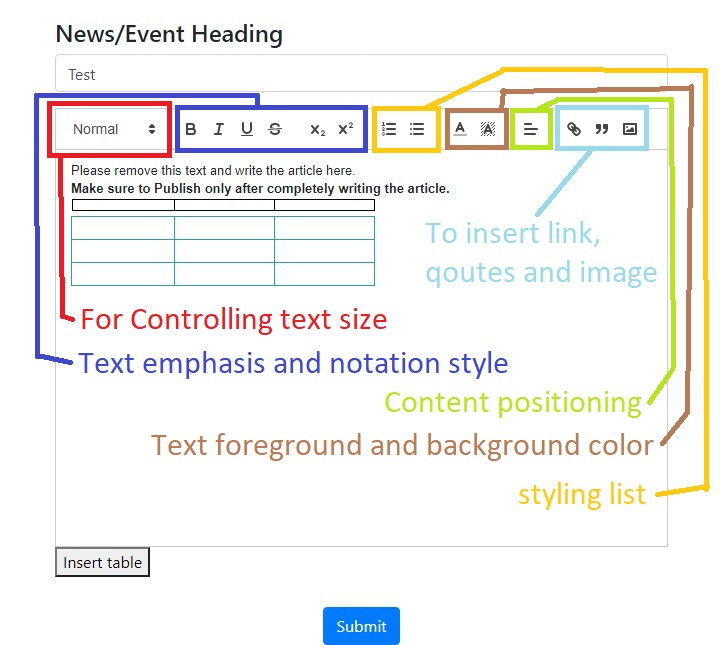
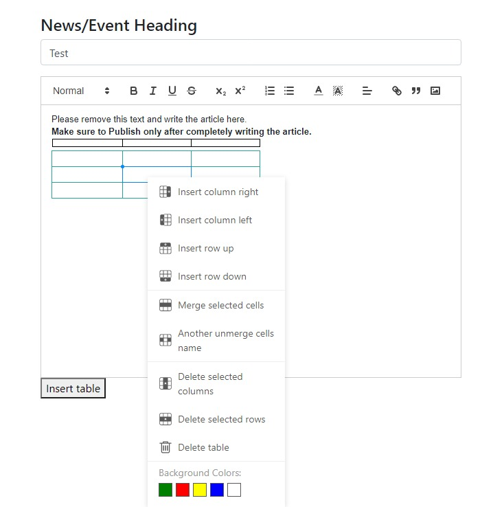

Guide for faculty¶
You can freely send an email to surajs6572@gmail.com if the following guide does not answer your questions or if you want me to add any other section to this guide.
Changing password¶
After logging in using email and password, click the change password button as highlighted in the image.
You will get a new page asking to enter old password, new password and new password confirmation.
Personal info in faculty page¶
The personal information of each faculty member shown in faculty page is made up of following two objects.
- Primary details
This includes details like name, profile picture, designation, email, phone and areas of interest. In the image given below, details inside the green box are editable whereas the one inside red (email) cannot be edited.
- Cards
Each cards have a heading and a body, both of which are editable. The heading can be anything you wish to include like educational qualification, publications, etc. A body can also contain anything you wish. The image below can give you a better understanding
Editing Personal info¶
Login using your institute email id and password. If the email is registered in the website, the backend code loads details corresponding to the email address.
Personal details and cards can be edited by clicking their respective buttons as shown.
Editing Primary details¶
Following page will be displayed after clicking edit Primary details button.
Profile image can be changed by clicking Choose File button. The highest image size limit is 5 MB but smaller image size is preferred because it reduces loading time for website visitors.
Please refrain from leaving any of the fields empty.
Editing cards¶
Clicking edit cards button, will bring up a page with headings of all cards. You can either edit or delete a card by pressing edit or delete buttons corresponding to the card heading. New card can be created using the Add card button at the bottom of the list. The body of a card can include tables, list, etc. See Features in body section to learn more about it.
Note - As soon as delete button is pressed, the card will be deleted. No confirmation feature as of now!
Features in body¶
Parts of website like news articles, card body, Academic pages, etc is integrated with an opensource WYSIWYG quill editor so that we can edit contents without writing HTML codes. An overview of all the functions included in the editor is given in the image below. Table can be inserted by clicking the Insert table button on the bottom-left side of the text area.
By default, 3 rows and columns are created. A table can be further edited by right-clicking any of the table cell.
Note - The entire body of an article is limited to a size of 5 MB. So please note that total images+data you are including is less than 5 MB.
Other features in website¶
If you ever encounter a page with permission denied message or some unexpected behaviour, please read the paragraph below
All faculty members has a list of permissions associated with their account. Permissions include adding/editing/deleting personal info, news articles, PhD page, Labs page, etc in the website. Permissions are set by the website administrator or the person who has superuser access. Please contact them.
News articles¶
News article can be created by pressing the Publish a News button found in the page as soon as you login. Every News article has a heading and a body. News articles are identified by their heading. So publishing News with unique heading is preferred. This can prevent unnecessary confusion on identifying the news article when editing/deleting them.
The body can include images, tables, etc as described in Features in body section.
Home page Carousel¶
Carousel is the slideshow of the images in home page. New images can be added/removed. Options for this can be found as soon as you login.
If you are adding a new image, consider removing an old one so that users don’t have to spend much of their internet data. Also, smaller image size = faster carousel load speed
Other contents¶
There are other contents which faculty can edit (according to their permission) like Academic pages, PhD pages, etc. But I prefer the faculty asking a student with superuser access or website admin to do this.